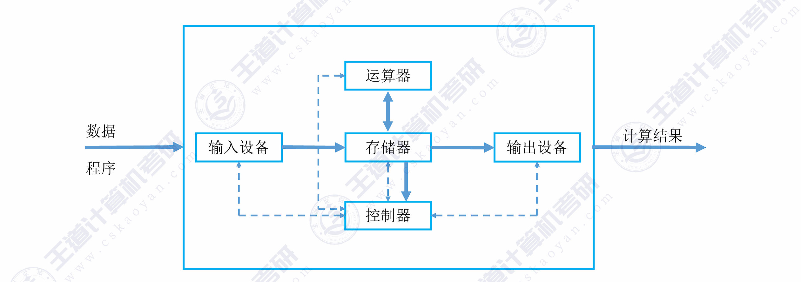
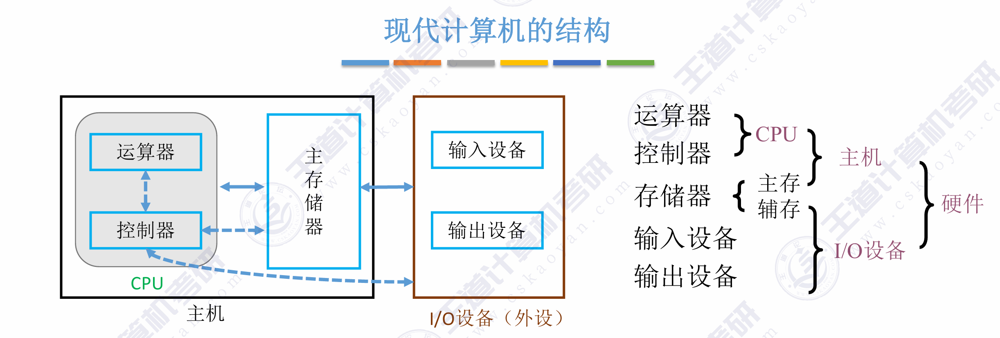

第一章 计算机系统概述
408 高频考点提醒：
- 冯·诺依曼架构的核心思想（"存储程序"）
- MAR/MDR 位数与寻址范围、存储容量的关系
- CPI、主频、CPU 执行时间的计算
- 计算机层次结构中 ISA 作为"软硬件分界面"的地位
- 区分系统软件和应用软件
- 编译 vs 解释的区别
（一）计算机发展历程
408 大纲说明：本节内容已从考纲中删除，简要了解即可，不作为考试重点。
一、计算机的发展阶段
| 阶段 | 年代 | 主要器件 | 特点 |
|---|---|---|---|
| 电子管 | 体积大、功耗高、可靠性差，使用机器语言 | ||
| 晶体管 | 体积缩小、功耗降低，出现高级语言（FORTRAN） | ||
| 中小规模集成电路 | 出现操作系统、微型计算机雏形 | ||
| 大规模/超大规模集成电路 | 微处理器诞生、PC 普及、网络时代 |
- 1946 年：第一台通用电子数字计算机 ENIAC 诞生于宾夕法尼亚大学。
- 冯·诺依曼：1945 年提出"存储程序"概念，奠定了现代计算机体系结构的基础。
二、摩尔定律
集成电路上可容纳的晶体管数目，约每隔 18~24 个月便会增加一倍，性能也将提升一倍。
（二）计算机硬件的基本组成
一、冯·诺依曼架构
1. 五大部件
冯·诺依曼计算机由五大部件组成：
| 部件 | 功能 |
|---|---|
| 输入设备 | 将程序和数据转换成计算机能识别的形式（如键盘、鼠标） |
| 输出设备 | 将计算机处理结果转换成人类能识别的形式（如显示器、打印机） |
| 存储器 | 存放指令和数据（两者以同等地位存放） |
| 运算器 | 执行算术运算和逻辑运算 |
| 控制器 | 控制各部件协调工作，按顺序从存储器取指令并执行 |

2. 核心理念："存储程序"
- 指令和数据以同等地位、用二进制形式事先输入主存储器
- 按地址寻访，从存储器中逐条取出指令顺序执行
- 程序执行过程就是不断取指令、分析指令、执行指令的循环
3. 冯·诺依曼架构的特点
| 特点 | 说明 |
|---|---|
| 五大部件 | 输入设备、输出设备、存储器、运算器、控制器 |
| 存储程序 | 指令和数据均以二进制存放在同一存储器中 |
| 以运算器为中心 | I/O 设备与存储器之间的数据传送需经过运算器 |
| 指令顺序执行 | 按地址顺序取指执行，由程序计数器 PC 指示下条指令地址 |
| 二进制表示 | 指令和数据均用二进制编码 |
二、现代计算机架构
现代计算机将冯·诺依曼架构进行了两方面优化：
1. 以存储器为中心
传统冯·诺依曼机以运算器为中心，I/O 操作需要经过运算器，效率低下。现代计算机优化为以存储器为中心，I/O 设备可直接与存储器交换数据（DMA 方式）。

2. CPU = 运算器 + 控制器
- CPU（中央处理器）：将运算器和控制器集成在一个芯片内
- 主机 = CPU + 主存储器（内存）
- I/O 设备（外设） = 输入设备 + 输出设备 + 辅助存储器（外存）

三、各个硬件的工作原理

1. 主存储器
主存储器（内存）由大量存储单元组成，每个存储单元有唯一的地址。

| 部件 | 全称 | 功能 | 位数 |
|---|---|---|---|
| MAR | 存储器地址寄存器 | 存放要访问的存储单元地址 | MAR 位数 = 地址线位数 → 决定最大寻址范围 |
| MDR | 存储器数据寄存器 | 存放从/向存储器读出/写入的数据 | MDR 位数 = 数据线位数 → 通常等于存储字长 |
- 存储单元：每个存储单元存放一串二进制代码，称为存储字，位数称为存储字长。
- 寻址范围：若 MAR 有
位，则可寻址 个存储单元。 - 容量：存储容量 = 存储单元个数 × 存储字长（如
位）。
存储器的基本结构：

2. 运算器
运算器用于进行算术运算和逻辑运算，核心部件：

|
|
PSW（程序状态字寄存器）/ FR（标志寄存器）：存放运算结果的状态标志（如进位 CF、零标志 ZF、符号 SF、溢出 OF 等），通常属于控制器部分。
3. 控制器
控制器是计算机的指挥中心，负责：
- 正确的分析和指向每条指令：取指令
- 保证指令按照规定序列自动连续的执行。
- 对各种异常情况和请求及时响应和处理。

|
|
4. I/O 设备
I/O 设备是计算机与外界进行数据交换的桥梁。
| 部件 | 功能 |
|---|---|
| 输入设备 | 将外界信息转换为计算机能识别的电信号（键盘、鼠标、扫描仪等） |
| 输出设备 | 将计算机处理结果转换为外界能识别的形式（显示器、打印机、音箱等） |
| 外存/辅存 | 长期保存大量程序和数据（磁盘、固态硬盘、光盘等） |
5. 五大部件工作流程总结
以一条指令 ADD M（将地址 M 中的数据与 ACC 相加）为例：
xxxxxxxxxx① 取指令：PC → MAR → 存储器 → MDR → IR（同时 PC+1）② 分析指令：IR（操作码部分）→ ID → CU 产生控制信号③ 取操作数：IR（地址码部分 M）→ MAR → 存储器 → MDR → X④ 执行运算：CU 控制 ALU 执行 (ACC) + (X) → ACC⑤ 取下一条指令：重复①
xxxxxxxxxxPC ──▶ MAR ──▶ 存储器 ──▶ MDR ──▶ IR│┌────────────────────────────────────┘│ 操作码 → ID → CU│ 地址码 ──────────▶ MAR ──▶ 存储器 ──▶ MDR ──▶ X│ │└── CU 控制信号 ─────────────────────────────────▶ ALU ◀─┘│▼ACC（结果）
（三）计算机软件
一、软件的分类
| 类别 | 定义 | 举例 |
|---|---|---|
| 系统软件 | 管理、监控和维护计算机资源，为应用软件提供运行平台的软件 | 操作系统、编译器、DBMS |
| 应用软件 | 用户为解决特定应用领域的实际问题而编写的程序 | Word、Excel、浏览器 |
408 常见考点：区分某个软件属于系统软件还是应用软件。数据库管理系统（DBMS）属于系统软件。
二、三种级别的语言
| 语言 | 说明 | 特点 |
|---|---|---|
| 机器语言 | 二进制代码，计算机唯一可直接执行的语言 | 可读性差、难以编写调试、不同机型不同 |
| 汇编语言 | 用助记符代替二进制操作码（如 ADD、MOV） | 需经汇编程序翻译成机器语言才能执行 |
| 高级语言 | 接近人类自然语言和数学表达式（如 C、Java、Python） | 需经编译/解释翻译成机器语言 |
三种语言的翻译过程：
xxxxxxxxxx高级语言 ──▶ 编译程序 ──▶ 汇编语言 ──▶ 汇编程序 ──▶ 机器语言│ │ ││ └── 解释程序（逐句翻译执行，不产生目标代码）│└── 或直接：高级语言 ──▶ 编译程序 ──▶ 机器语言
编译 vs 解释：
| 比较维度 | 编译程序 | 解释程序 |
|---|---|---|
| 工作方式 | 将整个源程序一次性翻译成目标代码 | 逐句翻译、逐句执行 |
| 是否产生目标代码 | 是（可独立运行） | 否（每次执行都需要解释程序） |
| 执行速度 | 快 | 慢 |
| 典型语言 | C/C++、Fortran | Python、JavaScript、BASIC |
三、指令集体系结构（ISA）
软件和硬件之间的接口/契约——定义了软件如何控制硬件。
- ISA 定义的内容：指令格式、操作类型、寻址方式、寄存器组织、存储空间、中断机制等。
- ISA 的作用：实现了软件和硬件的解耦——同一 ISA 上可运行所有兼容软件，同一 ISA 可有不同硬件实现（微架构）。
（四）计算机系统的层次结构
一、层次结构图
计算机系统是一个软硬件结合的层次化系统，从底层硬件到上层应用分为多个层次：

二、各层说明
| 层次 | 名称 | 实现方式 | 说明 |
|---|---|---|---|
| 第 1 层 | 数字逻辑层 | 硬件 | 最基本的逻辑门电路、触发器、寄存器的组合 |
| 第 2 层 | 微程序/硬布线层 | 硬件 | 用微指令/时序逻辑实现指令的执行 |
| 第 3 层 | 指令集体系结构层 (ISA) | 软硬件分界面 | 定义了机器语言指令集合，是软件与硬件的接口 |
| 第 4 层 | 操作系统层 | 软件 + 硬件 | 向上提供系统调用，向下管理硬件资源 |
| 第 5 层 | 汇编语言层 | 软件（虚拟机器） | 助记符形式的低级语言 |
| 第 6 层 | 高级语言层 | 软件（虚拟机器） | 面向用户应用的高级语言 |
核心理解：除第 1~2 层由硬件实现外，其他层次均可视为虚拟机器——对上层屏蔽底层实现细节。第 2 层（ISA）是软硬件之间的分界面/契约。
三、层次之间的关系
下层为上层服务：下层向上层提供接口，上层通过调用下层接口实现功能。
上层对下层透明：上层用户/程序员无需了解下层具体实现。
翻译 vs 解释：
- 翻译：将上层程序整体转换为下层程序再执行（如编译）
- 解释：对上层程序的每一条语句，逐条转换为下层指令并立即执行
（五）计算机系统的工作原理
一、计算机的工作过程

1. 预处理 (Preprocessing)
- 转换过程： 源程序
hello.c-> 预处理后的源程序hello.i - 核心动作： 预处理器拦截并处理所有以
#开头的命令。它会将#include指定的头文件内容直接插入到代码中，并完成所有宏定义（Macro）的文本替换。经过预处理后，文件仍然是人类可读的文本格式，但代码量通常会显著增加。
2. 编译 (Compilation)
- 转换过程：
hello.i-> 汇编语言程序hello.s - 核心动作： 编译器对代码进行词法分析、语法分析和语义分析，经过一定的优化后，将其翻译成汇编代码。这是高级语言逻辑向底层硬件架构转换的最关键一步。针对不同的 ISA（指令集架构，如 x86 或 ARM），这一步会生成截然不同的汇编指令集。
3. 汇编 (Assembly)
- 转换过程：
hello.s-> 机器语言程序（目标模块）hello.o - 核心动作： 汇编器将汇编代码几乎“一对一”地翻译成 CPU 能够直接解析执行的二进制机器指令，并将其打包成可重定位的目标文件（Object File）。此时的文件已经是纯粹的 0 和 1，无法再用普通的文本编辑器直接阅读。
4. 链接 (Linking)
- 转换过程：
hello.o+ 其他被引用的目标模块（如printf.o） -> 可执行文件hello.exe - 核心动作： 链接器负责将你编写的代码与标准的系统库函数或其他独立的模块“缝合”起来。它会合并各个目标文件的段（如代码段、数据段），解析并重定位所有的外部符号（比如确定
printf函数在内存中的确切地址），最终打包成操作系统可以加载运行的可执行文件。
二、"存储程序"工作方式
计算机工作的本质就是不断从内存取指令、执行指令的循环。程序启动前，指令和数据必须先装入主存储器。
三、指令执行过程
每条指令的执行可分为以下阶段：
xxxxxxxxxx┌──────────┐ ┌──────────┐ ┌──────────┐ ┌───────────┐│ 取指令 │───▶│ 译码 │───▶│ 执行 │───▶│ 中断 ││ (Fetch) │ │ (Decode) │ │(Execute) │ │(Interrupt)│└──────────┘ └──────────┘ └──────────┘ └───────────┘▲ │└──────────────────────────────────────────────────┘取下一条指令
| 阶段 | 操作 | 涉及部件 |
|---|---|---|
| ① 取指令 (Fetch) | PC → MAR → 存储器 → MDR → IR；PC + 1 | PC, MAR, 存储器, MDR, IR |
| ② 译码 (Decode) | IR 的操作码 → ID → CU 产生控制信号 | IR, ID, CU |
| ③ 执行 (Execute) | 根据操作类型执行：取操作数 → ALU 运算 → 存结果 | CU, MAR, MDR, ALU, ACC |
| ④ 中断 (Interrupt) | 检查是否有中断请求，若有则转入中断处理程序 | CU, PC |
四、以一段 C 代码为例看程序执行过程
xxxxxxxxxxint a = 3, b = 5, c;c = a + b;从源程序到执行的全过程：
xxxxxxxxxxC 源程序│ ① 编译（compiler 翻译）▼汇编代码│ ② 汇编（assembler 翻译）▼机器语言（目标代码）│ ③ 链接（linker 链接库函数）▼可执行文件（装入内存）│ ④ 加载（loader 装入内存）▼CPU 逐条取指令、译码、执行
对应的指令序列（伪汇编）：
xxxxxxxxxx① LOAD R1, [a] ; 从内存地址 a 取 3，放入寄存器 R1② LOAD R2, [b] ; 从内存地址 b 取 5，放入寄存器 R2③ ADD R3, R1, R2 ; R3 ← R1 + R2 = 8④ STORE [c], R3 ; 将 R3 的值 8 存回内存地址 c硬件层面的执行过程（以 ADD R3, R1, R2 为例）：
xxxxxxxxxx1. 取指：PC → MAR，存储器读出指令 → MDR → IR（PC+1）2. 译码：IR 操作码 "ADD" → ID → CU 识别为加法指令3. 执行：CU 控制 R1→ALU_A, R2→ALU_B, ALU做加法, ALU输出→R3
理解要点：程序运行 = CPU 不断进行"取指→译码→执行→中断检查"的循环，直到程序结束或遇到停机指令。
（六）计算机的性能指标
一、机器字长
CPU 一次能处理的二进制数据的位数。
| 指标 | 说明 | 示例 |
|---|---|---|
| 机器字长 | CPU 内部数据通路宽度、ALU 一次运算的位数 | 32 位机 → 字长 = 32 bit |
| 存储字长 | 一个存储单元存放的二进制位数 | 通常 = 机器字长，也可为机器字长的整数倍 |
| 指令字长 | 一条指令的二进制位数 | 可等于机器字长，也可为机器字长的整数倍 |
字长越长，计算精度越高、寻址范围越大，但硬件成本也相应提高。
二、存储容量
| 指标 | 含义 | 公式 |
|---|---|---|
| 主存容量 | 主存储器能存放的二进制信息总量 | 存储单元个数 × 存储字长 |
| 辅存容量 | 外存储器能存放的二进制信息总量 | 以字节（Byte）为单位 |
容量单位：
- 1 KB =
B = 1024 B - 1 MB =
B - 1 GB =
B - 1 TB =
B
与 MAR/MDR 的关系：
xxxxxxxxxx若 MAR 为 16 位 → 存储单元个数 ≤ 2¹⁶ = 65536 = 64K若 MDR 为 32 位 → 存储字长 = 32 bit = 4 B→ 主存最大容量 = 64K × 4 B = 256 KB
存储器带宽：单位时间内存储器所能传输的数据量，反映存储器的数据传输速率。
若每个存储周期可传输多次数据（如 DDR），则：
| 指标 | 含义 | 单位 | 公式 |
|---|---|---|---|
| 存储器带宽 | 每秒可从存储器读/写的最大数据量 | B/s、MB/s、GB/s | 数据总线宽度 × 频率 × 每周期传输次数 |
示例：某 DDR4-3200 内存，数据总线宽度 64 bit（8 B），工作频率 1600 MHz，每周期传输 2 次：
三、运算速度
1. 主频与时钟周期
| 指标 | 定义 | 关系 |
|---|---|---|
| 主频 ( | CPU 内数字脉冲信号的振荡频率 | 单位：Hz（如 3.0 GHz） |
| 时钟周期 ( | 主频的倒数，即一个时钟脉冲的时间 |
例如主频 3.0 GHz → 时钟周期
ns
2. CPI（Clock cycles Per Instruction）
执行一条指令所需的平均时钟周期数。
| 情况 | 说明 |
|---|---|
| CPI 小 | 指令执行快 |
| 不同指令 CPI 不同 | 加法 CPI 可能为 1，乘法 CPI 可能为 3~5 |
3. 执行时间（CPU 时间）
CPU 执行一段程序所花费的时间。
408 常考：三个因素——指令条数（算法/编译器决定）、CPI（指令集和微架构决定）、时钟周期
（工艺决定）。
4. MIPS（Million Instructions Per Second）
每秒执行多少百万条指令。
5. MFLOPS / GFLOPS / TFLOPS
每秒执行多少百万/十亿/万亿次浮点运算。
| 单位 | 含义 |
|---|---|
| MFLOPS | |
| GFLOPS | |
| TFLOPS |
四、其他性能指标
| 指标 | 含义 | 单位 | 关系 |
|---|---|---|---|
| 响应时间 | 从提交请求到获得第一个结果的时间 | ms / s | = CPU 时间 + I/O 时间 + 等待时间 |
| 吞吐量 | 单位时间内系统完成的作业数量 | 作业数/秒（TPS、QPS） | 系统整体性能 |
| 利用率 | 资源（CPU、存储器等）实际使用时间占总时间的比例 | 百分比（%） | = 实际使用时间 / 总时间 × 100% |
| 带宽 | 单位时间内传输的数据量 | bit/s（bps）、B/s | 受总线宽度、频率影响 |
| 基准测试 | 运行一组标准测试程序来衡量性能 | 无量纲（相对分数） | SPEC 是最常用的 CPU 基准测试套件 |
五、性能指标总结表
| 指标 | 公式 | 单位 | 决定因素 |
|---|---|---|---|
| 时钟周期 | 秒 (s) | 制造工艺 | |
| 主频 | Hz | 制造工艺 | |
| CPI | — | ISA + 微架构 | |
| CPU 执行时间 | 秒 (s) | 指令数 × CPI × T | |
| MIPS | 百万条/秒 | f + CPI |
优化方向：
- 减少指令条数 → 改进算法、优化编译器
- 降低 CPI → 改进微架构（流水线、超标量）
- 缩短时钟周期 → 提升半导体工艺、降低电路延迟
（七）本章总结
xxxxxxxxxx第一章 计算机系统概述├── 计算机发展历程（了解即可）│ ├── 电子管 → 晶体管 → 集成电路 → 大规模集成电路│ └── 摩尔定律├── 硬件基本组成│ ├── 冯·诺依曼架构（五大部件 + 存储程序 + 以运算器为中心）│ ├── 现代计算机架构（以存储器为中心 + CPU = 运算器 + 控制器）│ └── 各部件工作原理│ ├── 主存储器：MAR、MDR、存储体│ ├── 运算器：ACC、MQ、X、ALU│ ├── 控制器：PC、IR、ID、CU│ └── I/O 设备：输入/输出/辅存├── 计算机软件│ ├── 系统软件 vs 应用软件│ └── 三种语言：机器语言 → 汇编语言 → 高级语言├── 层次结构│ ├── 数字逻辑 → 微程序 → ISA（分界面）→ OS → 汇编 → 高级语言│ └── 翻译 vs 解释├── 工作原理│ ├── 存储程序 = 不断取指→译码→执行│ └── 源程序 → 编译 → 汇编 → 链接 → 可执行文件└── 性能指标├── 机器字长├── 存储容量（与 MAR/MDR 位数相关）├── 运算速度（主频、CPI、MIPS、FLOPS）└── CPU 执行时间 = 指令数 × CPI × T